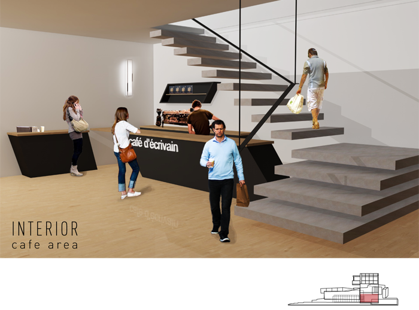

Type
School project
Role
Project Manager
Prototyping
Texturing
Lighting
Post-Production
Software


Team
Soojin Lee
Yan Yao Li
Mae Lim
Bruce Lui
Yee Loong Ooi
Award
2012 Seattle Design Charette Runner up
Objective
Select a site found at the Olympic Sculpture Park in Seattle to design a building for writers to conduct their work with effective space.
Process
Prior to the design, precedent studies have been researched to understand other architects’ tactics in successful space design. Then, the team visited and researched the sites available by experiencing the environment and documenting the space using photography, video and written notes. Eventually, the team decided to take on the challenge to design a space next to the highway. We first began brainstorming negative and positive components applied in order to generate various conceptual forms. Once the idea was formed, a proposal was created using 3D modelling, sketches, photography and a physical conceptual model to explain our approach. Afterwards, more iteration was conducted to elaborate and strengthen the idea to reach to the final outcome. Within the team, my contributions involves applying texture and lighting to the exterior renderings of the building, making a physical prototype using foam to capture the concept of the building, as well as conducting post-production to enhance a realistic environment.
Result
With the challenge in choosing a site that consists sound issues from the highway, the building has been moved back and that slant windows were implemented to deflect loud noises in order to offer writers a peaceful area to work in addition to looking over the sea. By constantly using 3D rendering tools and post-production, I have quickly grasp the softwares used to produce believable outcomes to impress clients in captivating their responses.
Images
- 